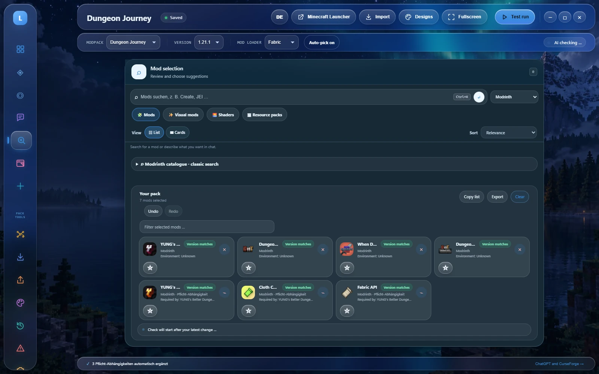

Die richtigen Mods finden.
Modrinth nach Thema, Minecraft-Version, Loader, Kategorie und Umgebung durchsuchen. Abhängigkeiten zeigen auch an, welche Mod eine Bibliothek benötigt.
02 / Modspire · Minecraft Java
Mods finden, Varianten vergleichen und eine installierbare .mrpack exportieren. Eine lokale Werkstatt für das Pack, das du spielen willst.

Lokal auf Windows
01 / Pack-Werkzeuge
Modrinth nach Thema, Minecraft-Version, Loader, Kategorie und Umgebung durchsuchen. Abhängigkeiten zeigen auch an, welche Mod eine Bibliothek benötigt.
Snapshots speichern und sehen, welche Mods und Versionen hinzugekommen, weggefallen oder verändert worden sind. Die Minecraft-Konfiguration wird mitverglichen.
Kompatible Updates vorab prüfen und einzeln auswählen. Vor jeder Änderung wird automatisch ein Snapshot angelegt.
Als .mrpack exportieren: mit exakten Versionen, Pflicht-Abhängigkeiten, geprüften Hashes, Download-URLs und konkreter Loader-Version. Oder eine Liste mit Projektlinks teilen.
Mods mit Sternen und eigenen Notizen vormerken. Mehrere Pack-Projekte haben eigene Versionen, Auswahl und Chatverläufe; Änderungen lassen sich rückgängig machen.
Texturen, Blockbench-Modelle, Quellcode und unterstützte JAR-Builds direkt aus allen fünf App-Layouts öffnen. Ein privater lokaler Server hält die Werkzeuge zusammen.
02 / In der App


Ein optionaler Assistent hilft beim Planen. Du prüfst Vorschläge, bevor Mods übernommen werden. ChatGPT-Konto, OpenAI-/Anthropic-API, Ollama, OmniRoute oder ein lokaler OpenCode-Server stehen zur Wahl.
Modrinth-Sharecode, öffentliche Pack-Links oder eine .mrpack in ein bearbeitbares Projekt übernehmen. Exakte Versionsbindungen bleiben erhalten.
Der Crash Analyzer benennt eine Mod nur, wenn das Log Hinweise liefert. Lokale Tages-Snapshots ergänzen die Allzeit-Favoriten um Wochenfavoriten.
03 / Gut zu wissen
Modspire organisiert Packs und prüft Metadaten. Es installiert keinen Minecraft-Loader und bestätigt nicht, dass ein Pack im Spiel tatsächlich startet.
Zugangsdaten werden mit Windows-DPAPI verschlüsselt gespeichert. Chat-Inhalte gehen erst beim Senden an den von dir gewählten Anbieter. Der eingebettete Studio-Server blockiert fremde Origins und Host-Header-Rebinding.
04 / Aufnahme aus der App
05 / Für deinen Rechner
Eine portable EXE für Windows. Beim ersten Start wählst du einen lokalen Anzeigenamen – dafür wird kein Konto angelegt.
Release-Stand: 0.3.14. Weitere Versionen auf GitHub.
06 / Weiterlesen
Etwas unklar? Fehler melden oder Feedback teilen. Bitte Schlüssel, Namen und private Pfade aus Screenshots entfernen.